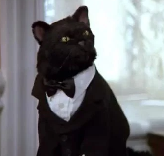

Resume of Salem Saberhagen

Master Plan...
My name is Salem and world domination is my master plan. It's a long term objective. In the meantime, I'm content with ridding the world of mice, and interrupting any nearby human when they are in a state of rest.
Want to learn more about how I became this way? Find out some more about me here.
Feel like reaching out? You should know where to find me! If you don't know.. it's here!
Education
- BA in Dog Teasing and Infuriation, 2015
- MSc in Mouse Trapping Techniques, 2018
- PhD in Human Ignoring Technologies, 2022
Work Eperience
- Human hot water bottle, 2012 - Present.
- Professional rodent deterrent, 2014 - Present.
- Trapeze artist, 2012 - 2014.
Skills
- Perfected the ability to wait until the exact moment the human has closed the door, before timing the exact moment I want to go through said door. It operates in three steps:
- Sit looking at the closed door until the human gets up, opens it, and asks you if you want to go through it.
- Stay completely still and unresponsive until the human gives up and closes the door.
- Scratch at the door.
- Can knock over any glass of water, from any surface, no matter how high or out of the way it is placed.
- Developed the ability to rapidly sniff out the dangerous toxins in cat food, and so can immediately switch my entire cat food preference taste from one day to the next. If only the humans could keep up..